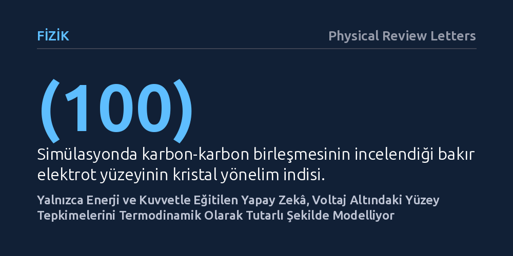

FIZIK · Physical Review Letters · 2026-10-18
Araştırmacılar, voltaj altındaki elektrokimyasal arayüzleri ek elektronik verilere ihtiyaç duymadan simüle edebilecek bir makine öğrenimi potansiyeli geliştirdi. Yalnızca enerji ve kuvvetlerle eğitilen model, bakır yüzeyindeki voltaja bağlı tepkime bariyerlerini ve yük aktarımını termodinamik tutarlılıkla başarıyla öngördü.
Pil ve yapay yakıt gibi elektrokimyasal teknolojilerin atomik düzeydeki simülasyonları, pahalı kuantum hesaplamalarına bağımlı kalmadan çok daha hızlı ve fiziksel kurallara tam uyumlu şekilde yapılabilecek.

Piller, yakıt hücreleri ve karbondioksiti dönüştüren elektrolizörler gibi aygıtlar belirli bir voltaj altında çalışır. Ancak bir elektrot yüzeyini atomik ölçekte simüle etmek fizikçiler için uzun süredir çözülmesi zor bir problem olmuştur. Çünkü voltaj uygulandığında elektrottaki elektron sayısı sabit kalmaz; dış devreden elektroda sürekli elektron girip çıkar.
Geleneksel yapay zekâ potansiyelleri ise genellikle kapalı ve elektron sayısı sabit sistemler için geliştirilmiştir. Bu modelleri voltaj altındaki sistemlere uyarlamak için ya her adımda son derece maliyetli kuantum mekaniksel hesaplamalar yapmak ya da modele elektriksel yük gibi karmaşık özellikleri ayrıca öğretmek gerekiyordu. Bu durum simülasyonları ya aşırı derecede yavaşlatıyor ya da fiziksel tutarsızlıklara yol açıyordu.
Araştırma ekibi bu tıkanıklığı aşmak için termodinamik olarak tutarlı sabit potansiyel makine öğrenimi potansiyeli (TCCP-MLP) adını verdikleri yeni bir yaklaşım geliştirdi. Bu yaklaşımda model, yapay bir veri yüklemesi yapılmadan, sadece atomların toplam enerjisi ve üzerlerindeki kuvvetler üzerinden eğitildi.
Yöntemin temelinde, elektronların serbestçe değişebildiği büyük kanonik termodinamik çerçeve yatıyor. Geliştirilen birleşik enerji fonksiyoneli sayesinde sistemin çıkış işi, yani elektrottan bir elektron koparmak için gereken enerji, dışarıdan zorlamayla değil doğrudan fonksiyonelin türevi olarak kendiliğinden ortaya çıkıyor. Böylece uzun menzilli elektrostatik etkileşimler ve atomlar arası yük transferi yapay eklemeler olmadan fiziksel olarak doğru şekilde hesaba katılabiliyor.
Ekip yeni modeli, karbondioksit yakalama ve dönüştürme teknolojilerinde kilit rol oynayan bir örnek üzerinde sınadı: Bakırın (100) kristal yüzeyinde gerçekleşen karbon-karbon (C-C) bağlanma tepkimesi. Bu tepkime, zararlı karbon gazlarını etilen veya etanol gibi faydalı kimyasallara dönüştürmek için gereken en kritik adımlardan biridir.
Yapay zekâ modeli, uygulanan farklı voltaj değerlerinde tepkimenin aşması gereken enerji bariyerlerini (aktivasyon bariyerleri) ve yüzeydeki atomlar arasındaki yük aktarımını yüksek doğrulukla öngördü. Modelin tahminleri, doğrudan temel kuantum mekaniği denklemleriyle hesaplanan değerlerle tam bir uyum sergiledi.
En dikkat çekici bulgu, modelin voltaj değişimlerine verdiği tepkinin termodinamik yasalara kusursuzca sadık kalmasıydı. Yapay zekânın sadece atomik kuvvetleri ve enerjileri izleyerek, arkasındaki karmaşık elektronik düzenlemeleri kendiliğinden doğru şekilde kurgulayabildiği görüldü.
Bu çalışma, elektrokimyasal katalizörlerin ve yeni nesil pillerin bilgisayar ortamında tasarlanmasında önemli bir hız artışının önünü açıyor. Daha önce haftalarca süren kuantum hesaplamaları yerine, aynı fiziksel kesinlikte sonuçlar veren makine öğrenimi modelleriyle saniyeler içinde binlerce farklı voltaj ve yüzey durumu taranabilir.
Yine de çalışmanın tek bir yüzey tepkimesiyle sınırlı olduğunu ve gerçek dünya şartlarındaki karmaşık sıvı elektrolit ortamlarını henüz tam olarak içermediğini belirtmek gerekir. Ancak kurulan temel metodoloji, voltaj altındaki malzemeleri bilgisayarda tasarlamak için sağlam ve fiziksel olarak tutarlı bir zemin oluşturuyor.